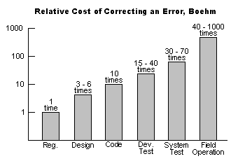

Home >> Quality Assurance
Contents
- Quality Assurance
- Advantages of Quality Assurance
- Disadvantages of Quality Assurance
- List of Quality Criteria
- List of Quality Attributes
Quality Assurance
The introduction and implementation of better methods, results, materials, and processes into software and the development of software.
Back to topAdvantages of Quality Assurance
- better software
- lower costs
-

Back to top
Disadvantages of Quality Assurance
- requires discipline
- hard to quantify
- scope larger than most org chart positions
- payback is longer than most accounting intervals
- cause and effect are hard to trace
- hard to manage and justify
List of Quality Criteria (US Dept. of Commerce 1977)
- Access audit
- Access control
- Accuracy
- Communication commonality
- Completeness
- Communicativeness
- Conciseness
- Consistency
- Data commonality
- Error tolerance
- Execution efficiency
- Expandability
- Generality
- Hardware independence
- Instrumentation
- Modularity
- Operability
- Self-documentation
- Simplicity
- Software system independence
- Storage efficiency
- Traceability
- Training
List of Quality Attributes (ISO Standard 9126)
- Suitability: to provide an adequate set of functions for specified tasks and user objectives
- Accuracy: to provide the right or agreed results or effects
- Interoperability: to interact with one or more specified systems
- Security: to prevent unintended access and resist deliberate attacks intended to gain unauthorized access to confidential information, or to make unauthorized modifications to information or to the program so as to provide the attacker with some advantage or so as to deny service to legitimate users.
- Maturity: to avoid failure as a result of faults in the software
- Fault tolerance: to maintain a specified level of performance in cases of software faults or of infringement of its specified interface.
- Recoverability: to re-establish its level of performance and recover the data directly affected in the case of a failure.
- Understandability: to enable the user to understand whether the software is suitable, and how it can be used for particular tasks and conditions of use.
- Learnability: to enable the user to learn its application.
- Operability: to enable the user to operate and control it.
- Attractiveness: to be liked by the user.
- Time behaviour: to provide appropriate response and processing times and throughput rates when performing its function, under stated conditions.
- Resource utilization: to use appropriate resources in an appropriate time when the software performs its function under stated condition.
- Analysability: to be diagnosed for deficiencies or causes of failures in the software, or for the parts to be modified to be identified.
- Changeability: to enable a specified modification to be implemented.
- Stability: to minimize unexpected effects from modifications of the software.
- Testability: to enable modified software to be validated.
- Adaptability: to be modified for different specified environments without applying actions or means other than those provided for this purpose for the software considered.
- Installability: to be installed in a specified environment.
- Co-existence: to co-exist with other independent software in a common environment sharing common resources.
- Replaceability: to be used in place of other specified software in the environment of that software.